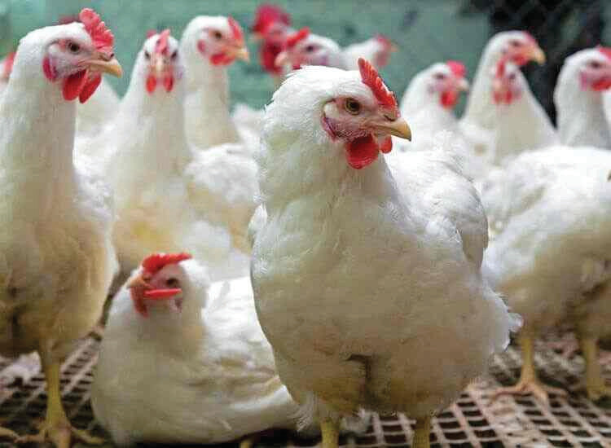
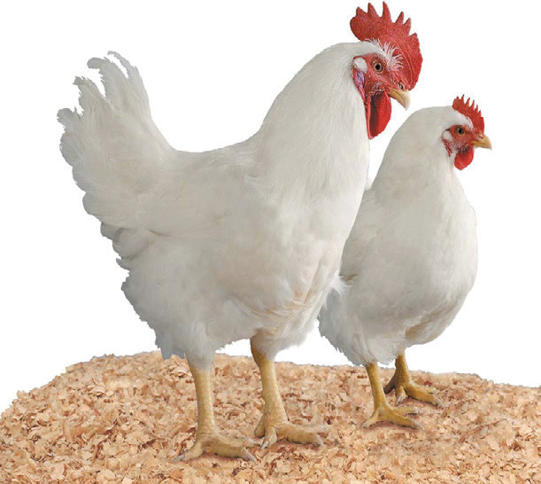
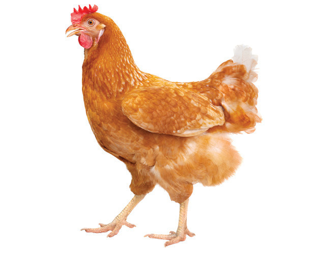
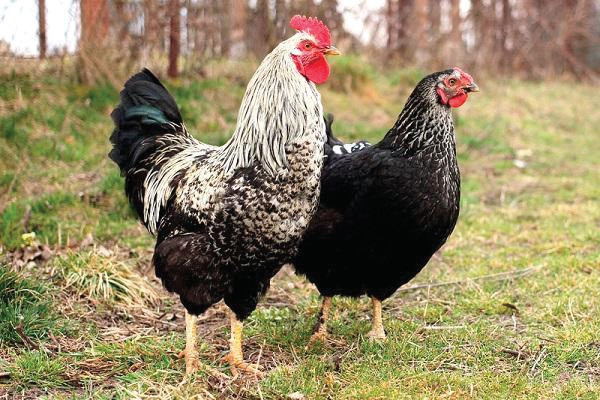
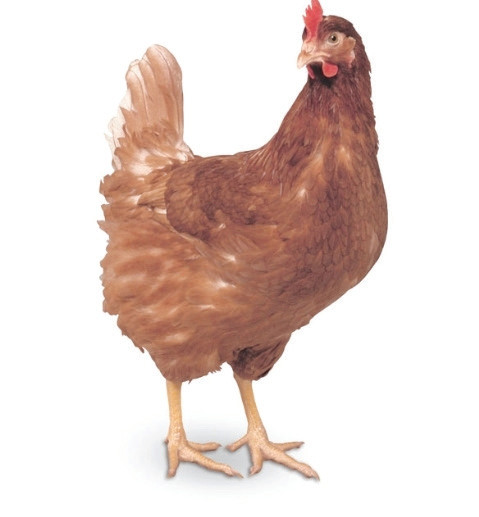
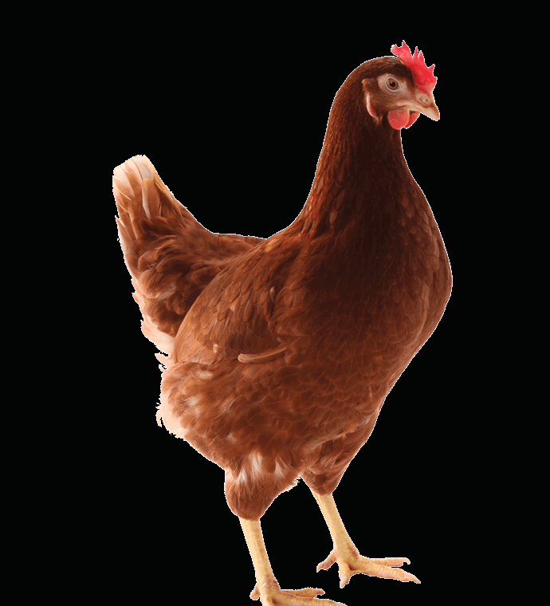

production, hardness to living conditions as well as improved eggshell quality and colour.
There are many kinds of hybrids. The most common include light, medium and heavy hybrids. The light and medium hybrids are for egg production purposes while heavy hybrids are for meat production. Figures 10.2 (a) to (f) show examples of hybrids developed by crossing pure exotic breeds of chickens.





